视频讲解9 分 29 秒
图文讲解
01工业革命：匹兹堡
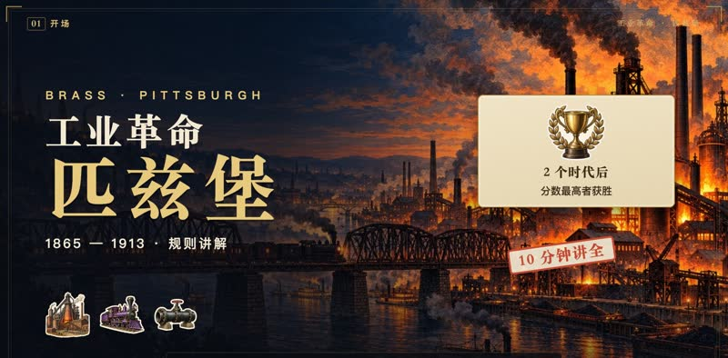
- 1865年，镀金时代。你是匹兹堡的工业大亨：开工厂、修铁路、铺油管。
- 打完两个时代，分数最高者获胜。十分钟，讲清全部规则。
02摆放地图
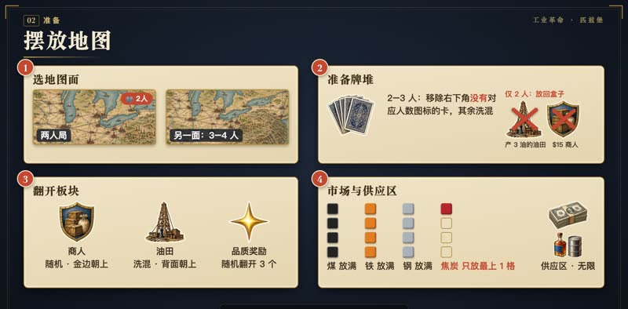
- 两人局用印着两人图标的地图面，三四人用另一面。
- 两三人局，移除右下角没有对应人数图标的卡，其余洗成牌堆。两人局再把产三桶油的油田、和奖励十五元的商人放回盒子。
- 商人随机放好，金边朝上；油田板块洗混，背面朝上各放一个；品质奖励随机翻开三个，其余收回盒子。
- 煤、铁、钢市场放满；焦炭市场每个只在最上格放一个。其余物资是供应区，数量无限。
03个人准备
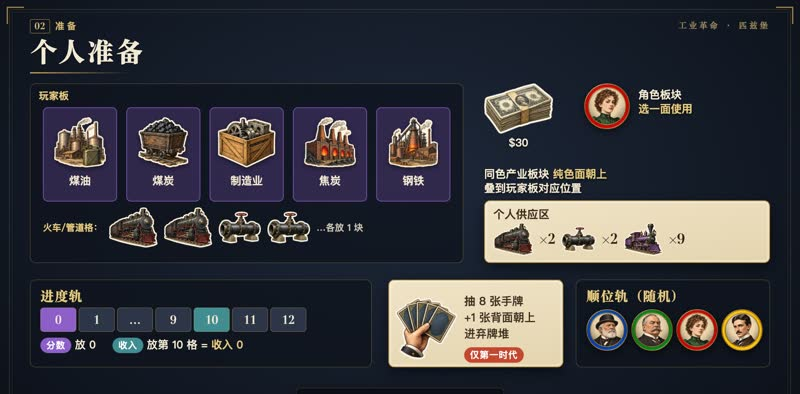
- 每人拿玩家板、三十元，和一个角色板块，选好用哪一面；同色产业板块纯色面朝上，叠到玩家板对应位置。
- 火车格和管道格各放一块对应板块；剩下的两辆重型火车、两条管道和九辆轻型火车，是你的个人供应区。
- 分数标记放0，收入标记放第10格，也就是收入0。
- 抽八张手牌，再抽一张背面朝上放进弃牌堆，这步只在第一时代做。
- 最后洗乱角色板块，随机排上顺位轨，从左到右就是第一轮顺序。
04回合流程
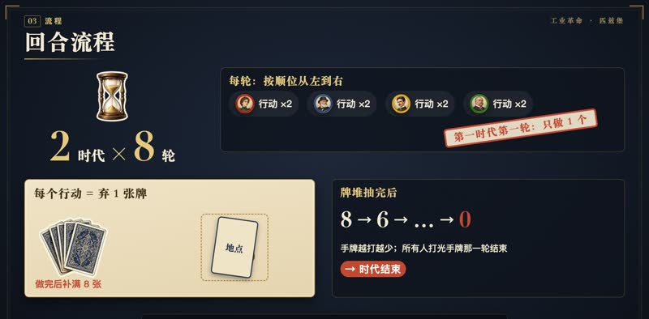
- 游戏共两个时代，每个时代八轮。
- 每轮按顺位，每人执行两个行动，可以重复；只有第一时代第一轮，每人只做一个。
- 每个行动都要弃一张牌，正面朝上放进弃牌堆。做完补满八张。
- 牌堆抽完不再补，所有人打光手牌的那一轮结束，时代结束。
05花钱与轮末
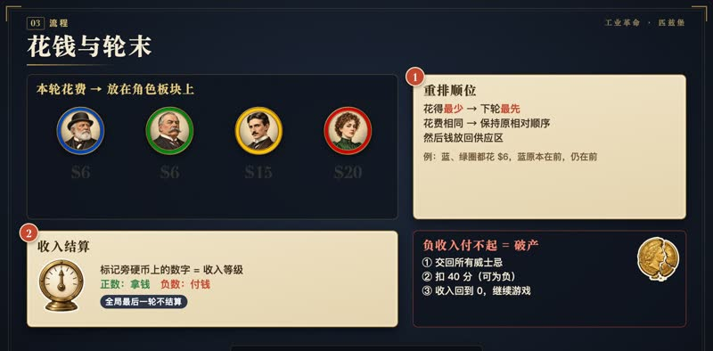
- 回合中花的每一笔钱，都放到自己的角色板块上。
- 轮末第一步：按本轮花钱从少到多重新排列顺位，最少的先手，相同的保持原相对顺序；然后钱放回供应区。
- 第二步：收入。标记旁硬币上的数字是收入等级，正数拿钱，负数付钱。全局最后一轮不结算。
- 负收入付不起就破产：交回所有威士忌，扣四十分，可扣成负分，收入回到0，继续游戏。
06收入：格与等级
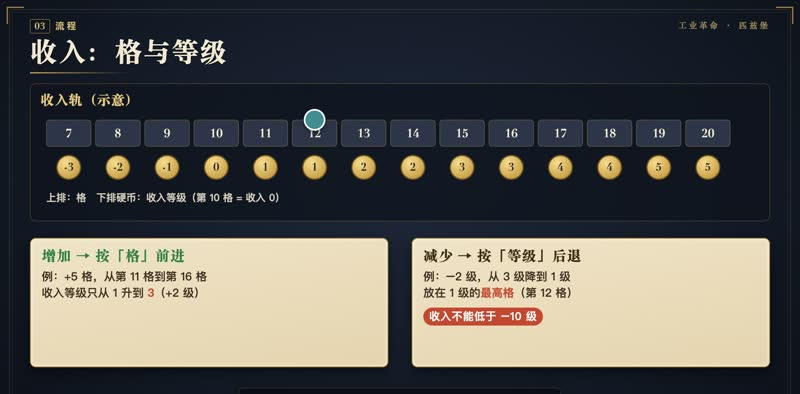
- 收入要分清“格”和“等级”：
- 增加时按格前进，前进五格可能只升两级；减少时按等级后退，放在新等级的最高格。
- 任何会让收入低于负10级的行动都不能做。
07六种行动
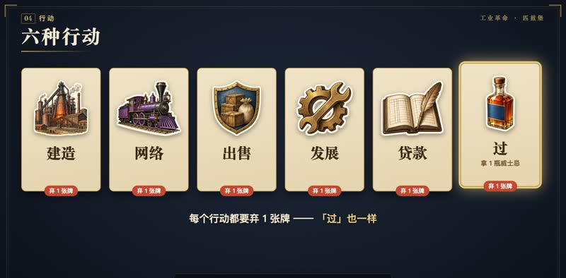
- 行动共六种：建造、网络、出售、发展、贷款，
- 以及“过”：拿一瓶威士忌，同样要弃牌。
08网络与连通
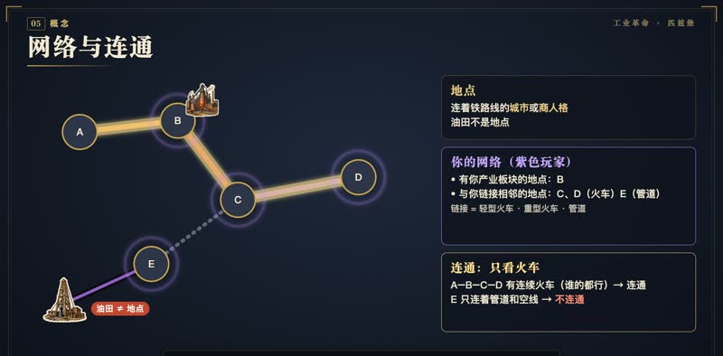
- 地点，是连着铁路线的城市或商人格；油田不是地点。
- 你的网络：有你产业板块的地点，加上与你的链接相邻的地点。链接包括轻型火车、重型火车和管道。
- 两个地点之间有连续的火车链接，不论谁的，就算“连通”；管道不算。
09产业轨道
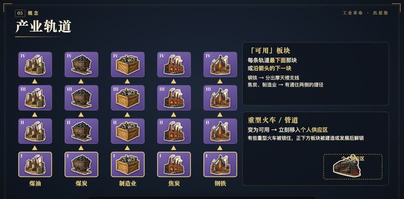
- 玩家板有五条产业轨道：煤油、煤炭、制造业、焦炭、钢铁。
- 每条轨道最下面那块，或沿箭头的下一块，才“可用”。钢铁分出摩天楼支线，焦炭和制造业有通往两侧的捷径。
- 重型火车或管道变为可用时，立刻移入个人供应区；有的重型火车要等它正下方的产业板块被建造或发展才解锁。
10读懂产业板块
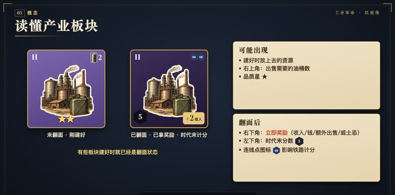
- 板块未翻面，表示刚建好；翻面表示已拿过奖励，时代末计分。有些板块建好就是翻面的。
- 板块上可能有：建好时放的资源、右上角的出售所需油桶、品质星；
- 以及翻面后右下角的立即奖励，左下角的时代末分数，和影响铁路计分的连线点图标。
11消耗资源
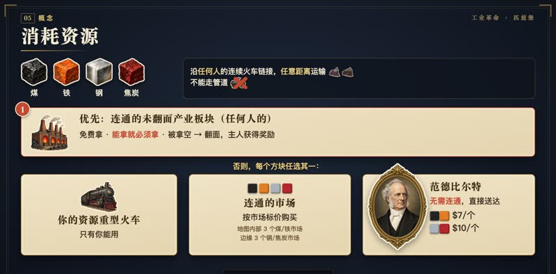
- 资源方块有煤、铁、钢、焦炭，可沿任何人的连续火车链接走任意远，但不能走管道。
- 每个方块单独选来源。首先：从任何人未翻面、且与需求地连通的产业板块上免费拿，能拿就必须拿。板块被拿空就翻面，主人获得奖励。
- 否则三选一：用你自己资源重型火车上的资源；
- 或从连通的市场按标价购买；
- 或找范德比尔特，无需连通：煤铁七元一个，钢和焦炭十元一个。
12运输石油
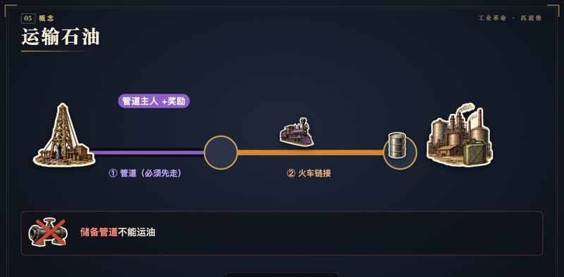
- 石油同理，只多一条：必须先经一条管道离开油田，再沿火车链接走。
- 每桶油流过一条管道，管道主人立刻拿该管道的奖励。储备管道不能运油。
13威士忌
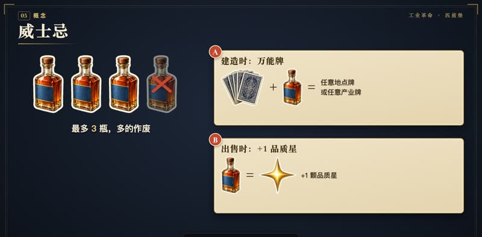
- 威士忌最多存三瓶，多的作废。
- 花一瓶可以：建造时把任意牌当成任意地点或产业牌；或出售时加一颗品质星。
14建造：出牌与选格
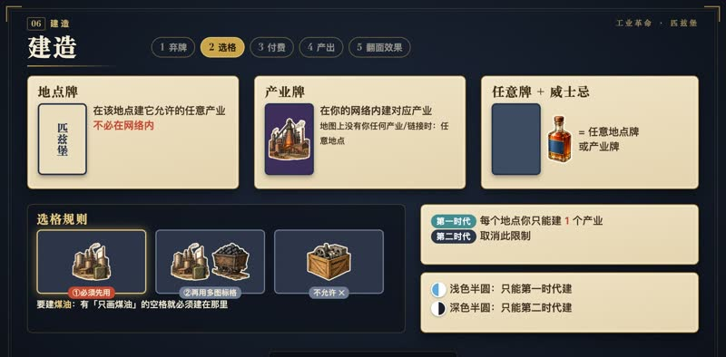
- 建造第一步，弃牌。地点牌：在该地点建它允许的任意产业，不必在网络内。
- 产业牌：在你网络内建对应产业；地图上还没有你任何产业或链接时，可建在任意地点。任意牌加一瓶威士忌，可当任意一种牌。
- 第二步，选一块对应的可用板块。该地点有只画这种产业的空格，就必须建在那；否则用画多个图标的空格；都没有就不能建。
- 第一时代，每个地点你只能建一个产业；第二时代取消。
- 费用下方的时代图标：浅色半圆只能第一时代建，深色半圆只能第二时代建。
15建造：付费与产出
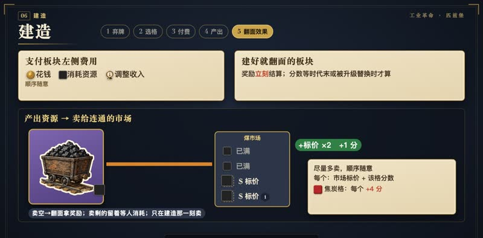
- 第三步，支付板块左侧的费用：花钱、消耗资源、调整收入，顺序随意。
- 第四步，板块右下角画着资源，就从供应区放上去。
- 若与有空位的同类市场连通，立刻尽量卖进去，每个拿标价，加上该格的分数。
- 卖空就翻面拿奖励；卖剩的留着等人消耗。只有建造那一刻会卖市场。
- 第五步，建好就翻面的板块立刻结算奖励，分数留到时代末或被升级替换时。
16升级
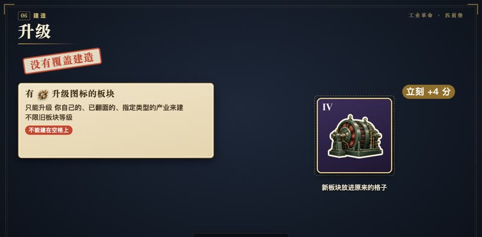
- 本作没有覆盖建造。费用里有升级图标的板块，只能升级你自己一个已翻面、指定类型的产业来建，不限等级。
- 移走旧板块，立刻获得它的分数，新板块放进原格；它不能建在空格上。
17网络行动
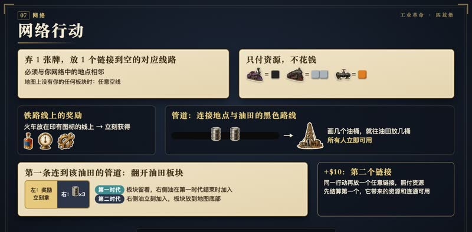
- 网络：弃一张牌，把一个链接放到空的对应线路上，须与你网络中的地点相邻；地图上没有你任何板块时，可放任意空线。
- 只付资源：轻型火车一煤，重型火车两钢，管道一铁。
- 火车放在印有威士忌、收入或免费发展图标的铁路线上，立刻获得奖励。
- 管道放在地点与油田之间的黑色路线上，路线画几个油桶，就往该油田放几桶，所有人立即可用。
- 第一条连到某油田的管道，翻开油田板块，拿左侧奖励。第一时代翻开：板块留着，右侧的油在第一时代结束时加入；第二时代翻开：右侧的油立刻加入，板块放到地图底部。
- 额外付十元，可在同一行动再放第二个任意链接，照付资源；先结算第一个，它带来的资源和连通都能用。
18重型火车与管道
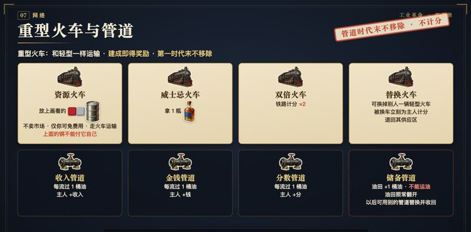
- 重型火车和轻型一样运输，但建成即得奖励，第一时代末也不移除。
- 资源火车：放上画着的焦炭、钢或油，不卖市场，只有你能免费用，照常走火车运输；它上面的钢不能用来支付它自己。
- 威士忌火车：拿一瓶威士忌。双倍火车：铁路计分翻倍。替换火车：可换掉别人的一辆轻型火车，被换的车立刻为主人计分，退回其供应区。
- 管道四种。收入、金钱、分数管道：每流过一桶油，主人拿对应奖励。
- 储备管道：给油田加一桶油，但谁都不能经它运油，油田照常翻开；你以后放管道时，可用别的管道替换它并收回。管道时代末不移除，也不计分。
19出售行动
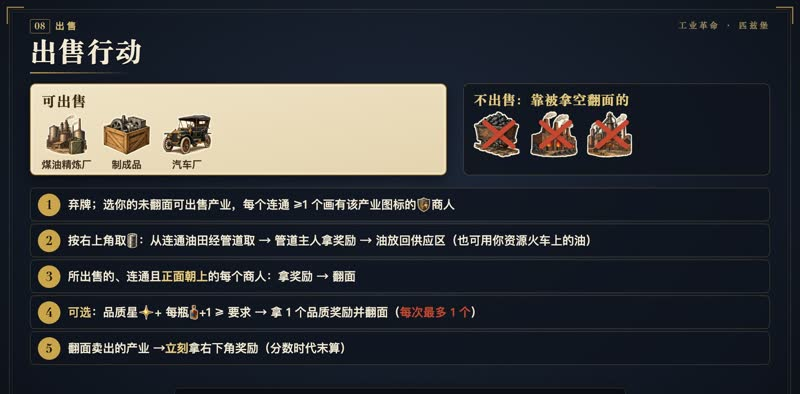
- 可出售的只有：煤油精炼厂、制成品、汽车厂。靠被拿空翻面的产业不出售。
- 出售：弃一张牌，选你一个或多个未翻面的可出售产业，每个都要连通至少一个画有该产业图标的商人。
- 按右上角数量取油：从连通油田经管道取，管道主人拿奖励；也可用你资源火车上的油，用完放回供应区。
- 你所出售的、连通且正面朝上的每个商人，拿其奖励后翻面。
- 可选：统计出售产业的品质星，每瓶威士忌加一颗，达到某个正面品质奖励的要求，就拿奖励并翻面；每次最多一个。
- 最后翻面卖出的产业，立刻拿右下角奖励，分数时代末再算。
20发展与贷款
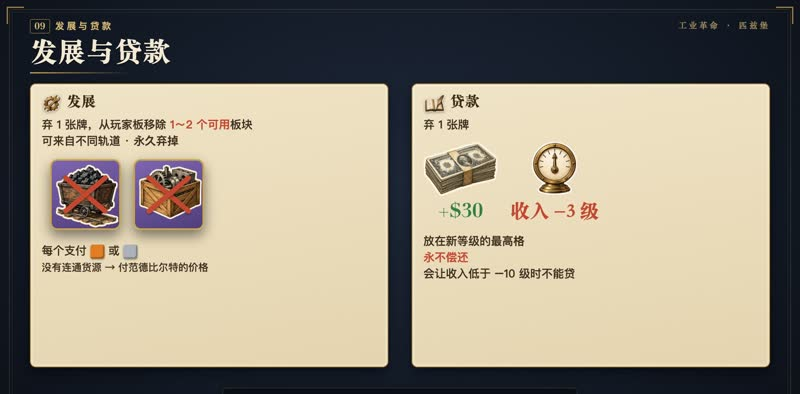
- 发展：弃一张牌，移除一到两个可用板块，可来自不同轨道，永久弃掉。
- 每个付一铁或一钢；没有连通货源，就付范德比尔特的价格。
- 贷款：弃一张牌，拿三十元，收入后退三级，放在新等级最高格。贷款永不偿还；会让收入低于负10级时不能贷。
21皇冠明珠产业
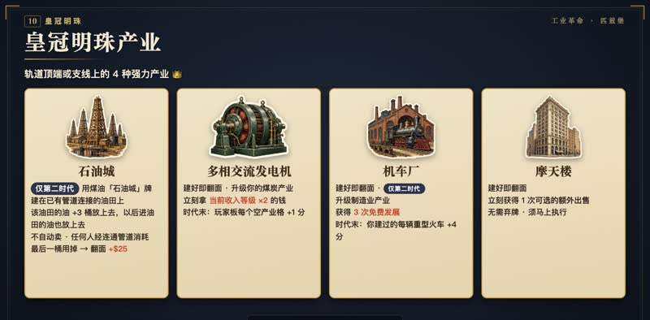
- 轨道顶端或支线上，有四种强力的皇冠明珠产业。
- 石油城：仅第二时代、用煤油“石油城”牌，直接建在已有管道连接的油田上。把该油田所有油再加三桶放上去，以后进入该油田的油也放上去。它不自动卖，任何人可经连通管道消耗；最后一桶用掉时翻面，奖励二十五元。
- 多相交流发电机：建好即翻面，升级你一个煤炭产业，立刻获得当前收入等级两倍的钱；时代末，你玩家板上每个空产业格得一分。
- 机车厂：建好即翻面，仅第二时代，升级一个制造业产业，获得三次免费发展；时代末，你建过的每辆重型火车得四分。
- 摩天楼：建好即翻面，立刻获得一次可选的额外出售，无需弃牌，须马上执行。
22时代结束
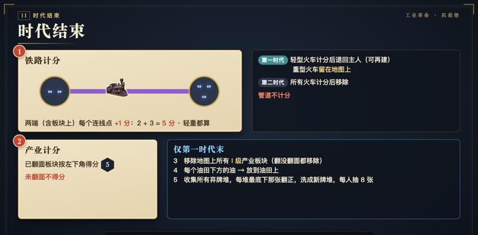
- 时代结束，依次结算。一、铁路：你的每个火车链接，两端地点上，包括板块上的每个连线点图标，得一分，轻重火车都算。
- 第一时代：轻型火车计分后退回主人，可再建；重型留在地图上。第二时代：所有火车计分后移除。管道不计分。
- 二、每个已翻面的产业板块按左下角得分，未翻面不得分。
- 第一时代末还要：三、移除地图上所有一级产业板块，不论是否翻面；四、把每个油田下方的油放到油田上；
- 五、收集所有弃牌堆，把每堆最底下那张翻正，洗成新牌堆，每人抽八张。
23胜利
- 两个时代后，分数最高者获胜；平局比收入轨位置，再平比钱。
- 去匹兹堡，建立你的工业帝国吧！
常见问题31 条
官方暂未发布 FAQ 或勘误，以下依据官方规则书 v2026.01 整理，点开查看答案。
顺位与花钱
下一轮的顺位怎么决定？花费相同怎么办？
每轮结束时，按本轮花费从少到多重新排列顺位轨上的角色板块：花得最少的下一轮先行动，花得最多的最后行动；花费相同的玩家保持原来的相对顺序。行动中花的钱都放在自己的角色板块上计数，回合结束后统一归还公共供应。 来源：规则书
每轮有几个行动？手牌用完后怎么办？
每轮每人执行2个行动（可以两次执行同一行动），每个行动都要弃1张手牌；唯一例外是第1时代第1轮，每人只执行1个行动。行动后补牌到8张；牌库抽空后手牌会逐渐变少，所有玩家打出最后的手牌的那一轮结束时，本时代结束。 来源：规则书
收入与贷款
收入「等级」和「格」有什么区别？
收入增加时按「格」前进（例如+5只是前进5格，可能只涨2级）；收入减少时按「等级」后退，并把标记放在新等级的最高一格。每轮结束按收入等级拿钱或付钱，但游戏最后一轮结束后不再结算收入。 来源：规则书
贷款行动怎么做？有限制吗？
弃1张任意牌，从公共供应拿$30，收入标记后退3个收入等级；贷款永不偿还。若贷款会让收入等级低于-10则不能贷款（任何会让收入等级低于-10的行动都不允许）。 来源：规则书
付不起负收入（破产）会怎样？
与伯明翰不同，本作不需要卖工业板块。处理方式是：①把所有威士忌还回公共供应；②失去40分（分数可以低于0）；③把收入标记移到0收入等级（进度轨第10格），然后继续游戏。 来源：规则书
建造
第1时代一个地点能建几个工业？
第1时代你在每个地点只能建1个自己的工业板块，这个限制在第2时代取消。 来源：规则书
建造时地点牌、工业牌、威士忌分别怎么用？
地点牌：可在该地点建造任意可建的工业，即使该地点不在你的网络内。工业牌：在你网络内的地点建造对应工业；若版图上还没有你的任何工业或连线板块，可用工业牌在任意地点建造。任意1张牌+1个威士忌：可当作任意地点牌或工业牌。 来源：规则书
地点里有多个空格时建在哪？时代图标是什么意思？
若该地点有只印着这种工业图标的空格，必须建在那里；否则才能建在印有多种工业图标的空格。玩家板上费用下方印有第1时代图标的工业只能在第1时代建造，印有第2时代图标的只能在第2时代建造。 来源：规则书
能覆盖建造吗？「升级」怎么做？
本作没有覆盖建造。费用里带升级图标的板块只能通过升级建造：替换一个属于你、已经翻面、类型符合的工业（等级不限），立即移除旧板块并获得它的分数；升级板块不能建在空格上。 来源：规则书
有些板块建好时就已翻面，它们的奖励和分数何时结算？
已翻面板块上的奖励图标在建造时立即结算；但板块的分数不立即计入，要等时代结束时计分，或在它被升级替换时计分。 来源：规则书
资源与运输
资源方块怎么运输？铁也需要连线吗？
煤、铁、钢、焦炭四种方块的运输方式完全相同：只能经由连续的火车链接（轻型或重型火车，任何玩家的都可以）运送，距离不限，不能走管道。所以和伯明翰不同，铁也需要连线。 来源：规则书
消耗资源的优先顺序是什么？有相连市场时还能找范德比尔特吗？
只要能从相连的、尚未翻面的工业板块（任何玩家的）免费取用，就必须优先这样做。否则可以自由选择：自己的资源重型火车、相连市场按价格购买，或范德比尔特。不能或不想从市场购买时都可以找范德比尔特：无需连线，煤/铁每个$7，钢/焦炭每个$10。 来源：规则书
建好产资源的工业后，资源会自动卖给市场吗？
会，但只在建造的那一刻：若新工业与有空位的同类市场相连，立即尽可能多地卖出，每个方块获得标价以及该格上的分数。卖不掉的留在板块上，最后一个被取走时翻面并获得奖励。 来源：规则书
石油怎么运输？能向范德比尔特买石油吗？
石油离开油田的第一步必须经过管道，之后和方块一样沿火车链接运输；反过来，管道不能运送资源方块。范德比尔特只提供煤、铁、钢、焦炭，出售所需的石油须经管道从相连油田获取（或用自己石油资源火车上的油）。 来源：规则书
铁路与管道
网络行动的费用是多少？一次能建几条？
轻型火车1煤、管道1铁、重型火车2钢。两个时代都可以一次建1条或2条；第二条需额外支付$10（再加上它自身的费用），种类可以与第一条不同。先结算第一条的效果，再放第二条。火车放在印有威士忌、收入或免费发展图标的铁路线上时，立即获得该奖励。 来源：规则书
管道算我的网络吗？油田是地点吗？
链接包括火车和管道，与你任一链接相邻的地点都属于你的网络，所以管道也能扩展网络。但判断两地是否「连通」（用于运输）只看火车链接，不看管道。油田不是地点。 来源：规则书
时代结束后哪些链接会留在版图上？
第1时代计分后，轻型火车移除并还给主人（第2时代可以再建）；重型火车留在版图上。管道一直留在版图上，且不计分。第2时代计分后移除所有火车。 来源：规则书
重型火车和管道为什么不能随便用？怎么解锁？
开局时个人供应只有2辆重型火车、2条管道和9辆轻型火车，其余重型火车和管道在玩家板上锁定。当它们变为可用（有的要等正下方的产业板块被建造或发展掉）时，立即移入你的个人供应。 来源：规则书
资源重型火车上的资源谁能用？
建成时放上火车所示的钢、焦炭或石油，这些资源不会卖给市场。只有火车的主人可以免费使用（不强制），资源须沿火车链接运到使用地点。钢资源火车上的钢不能用来支付它自己的建造费用。 来源：规则书
替换火车、双倍火车、威士忌火车各有什么效果？
替换火车：可替换另一名玩家的一辆轻型火车，被替换的火车立即按时代结束的规则为主人计分，然后还给主人。双倍火车：铁路计分时得双倍分数。威士忌火车：建成时获得1个威士忌。 来源：规则书
管道连到油田时会发生什么？
管道路线上印有几个油桶，就立即往该油田放几桶油。若这是第一条连到该油田的管道，翻开油田板块并获得左侧奖励。第1时代翻开的油田板块留着，第1时代结束时加入右侧的油；第2时代翻开的立即加入右侧的油，并把板块放到版图底部。 来源：规则书
别人用我的管道运油，我有收益吗？储备管道是什么？
有：每桶油流经管道时，管道主人立即获得该管道的奖励（收入/金钱/分数管道），无论是谁在出售。储备管道：让相连油田增加1桶油，但任何玩家都不能经它运油（油田照常翻开）。之后放置管道时，主人可以用其他管道替换它并收回。 来源：规则书
出售
哪些工业能出售？出售需要什么条件？
只有煤油精炼厂、制成品、汽车厂可以出售；煤矿等产资源的工业靠资源被拿空翻面。弃1张牌，选一个或多个未翻面的可售工业：每个都须连通至少1个印有该工业图标的商人，并按板块右上角数量经管道取油。你所出售的、连通且正面朝上的每个商人，拿其奖励后翻面。 来源：规则书
品质奖励怎么领取？一次出售能领几个？
可选步骤：统计本次出售工业上的品质星，每花1个威士忌再加1颗，达到某个正面朝上的品质奖励的要求时可领取并翻面，每次出售最多领1个。卖出的工业翻面后立即获得右下角奖励，但板块分数要到时代结束才计。 来源：规则书
其他
威士忌怎么获得、怎么用？有上限吗？
获得途径：「过」行动（同样要弃1张牌）、威士忌火车、铁路线上的威士忌图标等。用途：建造时配任意1张牌当作任意地点牌或工业牌；出售时每花1个威士忌品质星+1。每人最多持有3个，超出的作废。 来源：规则书
2人局有哪些不同？
使用版图印有2人图标的一面。2人或3人局要移除右下角没有对应人数图标的牌。2人局还要把产3桶油的油田板块和奖励$15的商人板块放回盒内。 来源：规则书
皇冠明珠
石油城怎么建造、怎么翻面？
仅限第2时代。用煤油（石油城）牌直接建在已有管道相连的油田上。建成时把该油田现有的油全部放上去，再额外加3桶；之后进入该油田的油也都放上去。它不会自动卖出，任何玩家都可以经连通管道使用这些油，最后一桶用掉时翻面，奖励$25。 来源：规则书
多相交流发电机有什么效果？
建好即翻面，须升级你的一个煤炭产业来建造。建成时获得当前收入等级两倍的钱；时代结束时，你玩家板上每个空着的产业格得1分。 来源：规则书
机车厂和摩天楼有什么效果？
机车厂：仅限第2时代，建好即翻面，须升级你的一个制造业产业；建成时获得3次免费发展，时代结束时你每建过1辆重型火车得4分。摩天楼：建好即翻面，立即获得一次可选的额外出售（无需弃牌），须马上执行。 来源：规则书
时代结束与计分
时代结束时按什么顺序计分？平局怎么算？
①铁路：你的每条火车链接，两端地点上（含板块上）的每个连线点图标得1分。②每个已翻面的产业板块得左下角分数，未翻面不得分。仅第1时代还要：③移除所有一级产业板块；④把油田下方的油放到油田上；⑤收集弃牌堆，翻正每堆最底下一张后洗成新牌堆，每人抽8张。两个时代后分数最高者获胜；平局比收入轨位置，再比现金。 来源：规则书
第1时代建的工业到第2时代还会再计分吗？
一级产业在第1时代结束时一律移除；更高等级、已翻面的工业留在版图上，第2时代结束时会再计分一次。开发日志也提到，第1时代就打出高等级工业相当于计分两次，重型火车不在第1时代移除也是同理。 来源：开发日志